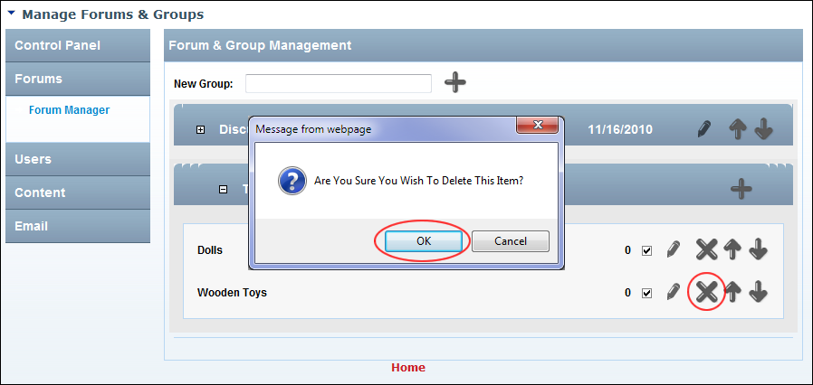

Deleting a Forum
How to permanently delete a forum and all posts within that Forum using the Forums module.
- Go to the Forum Administration page. See "Navigating to the Forum Admin Page"
- Select Forums > Forum Manager. This displays the Forum and Group Management section.
- Maximize
 the Forum Group associated with the forum to be deleted.
the Forum Group associated with the forum to be deleted.
- Click the Delete button. This displays the message "Are You Sure You Wish To Delete This Item?"
-

Deleting a Forum